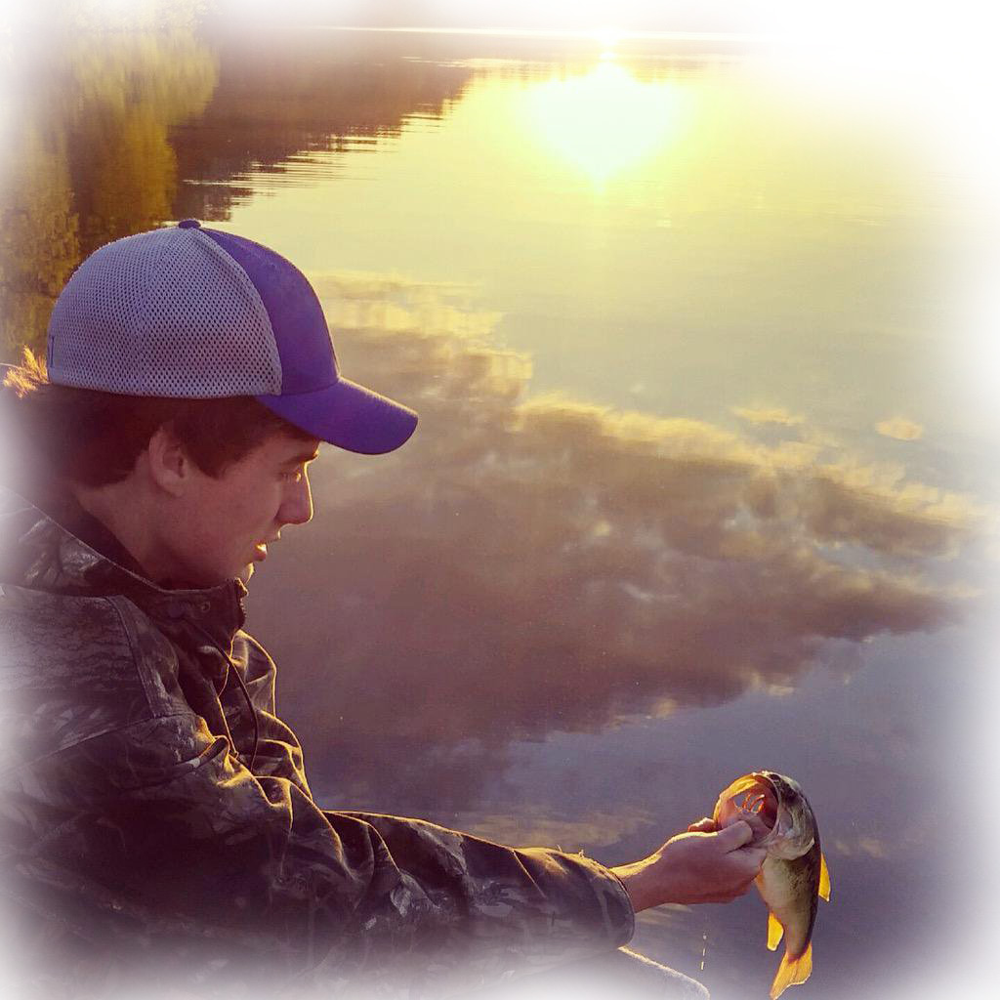

History
4:19 Fishing is in the process of becoming a full fledged business, but comes from humble beginnings. Originally founded in Bowling Green, Kentucky by David Andrew Heard. 4:19 began as an idea of David's and he worked from his home to develop baits and build a brand. Unfortanetly, his life was cut short in a tragic boating accident. Sadly, He will never be able to carryout his dream of owning a bait company, so in honor of his memory we've decided to let his legacy live through one of his ideas. 4:19 Customs, which represents everything about David. Being courteous, helpful, insightful, and overall supportive. David impacted people in such positive ways that its to long to list, but one of his most valient traits we value, was his will to bring others joy. We here at 4:19 Customs share these same values and strive to bring people together through fishing.